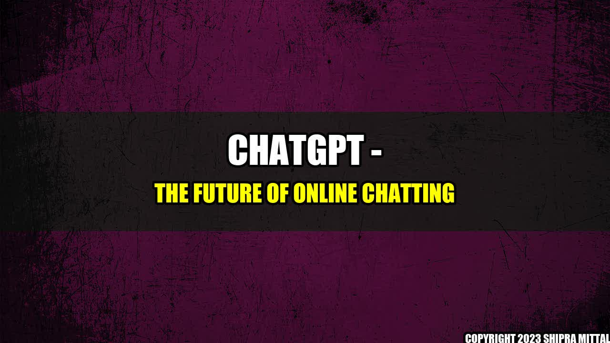

ChatGPT - The Future of Online Chatting

Once upon a time, there was a lonely person who wanted to make friends. But there were no options available that could help that person connect with others. However, now with the advancement of technology, we have several options available to us for chatting and connecting with others.
One such option is ChatGPT, a new player in the messaging app industry.
What is ChatGPT?
ChatGPT is a messaging app that provides various features such as group chat, voice and video calls, and many more. It has gained popularity because of its user-friendly interface and innovative features.
Who are the Main Companies in this Industry?
The online chatting industry is dominated by a few big names such as Facebook, WhatsApp, Line, WeChat, Kik, and Telegram. Let's take a close look at these companies and see what they offer.
- Facebook Messenger is one of the most popular messaging apps, with over 1.3 billion active users. It offers various features such as group chat, voice and video calls, and many more.
- WhatsApp is another popular messaging app with over 2 billion active users. It offers features such as group chat, voice and video calls, and end-to-end encryption.
- Line is a messaging app that is popular in Asia with over 760 million active users. It offers features such as group chat, voice and video calls, and stickers.
- WeChat is another popular messaging app in Asia with over 1.2 billion active users. It offers features such as group chat, voice and video calls, and a social media-like platform.
- Kik is a messaging app that is popular among teenagers with over 300 million registered users. It offers features such as group chat, anonymity, and integration with other apps.
- Telegram is a messaging app that is popular among privacy advocates with over 500 million active users. It offers features such as group chat, voice and video calls, and end-to-end encryption.
What Makes ChatGPT Different?
ChatGPT offers several features that are unique and not available in other messaging apps. Some of these features include:
- Intelligent chatbots that can help users with various tasks such as booking a flight, finding a restaurant, and many more.
- Smart replies that suggest responses to a message based on the context of the conversation.
- Customizable backgrounds and themes that users can set for their chats.
Conclusion
In conclusion, the online chatting industry is dominated by a few big names, but ChatGPT is trying to make a mark in this industry with its innovative features. It will be interesting to see how ChatGPT evolves and competes with other messaging apps.
References and Further Readings
Hashtags
#ChatGPT #OnlineChatting #MessagingApps #SocialMedia #Facebook #WhatsApp #Line #WeChat #Kik #Telegram
Akash Mittal Tech Article
Share on Twitter Share on LinkedIn